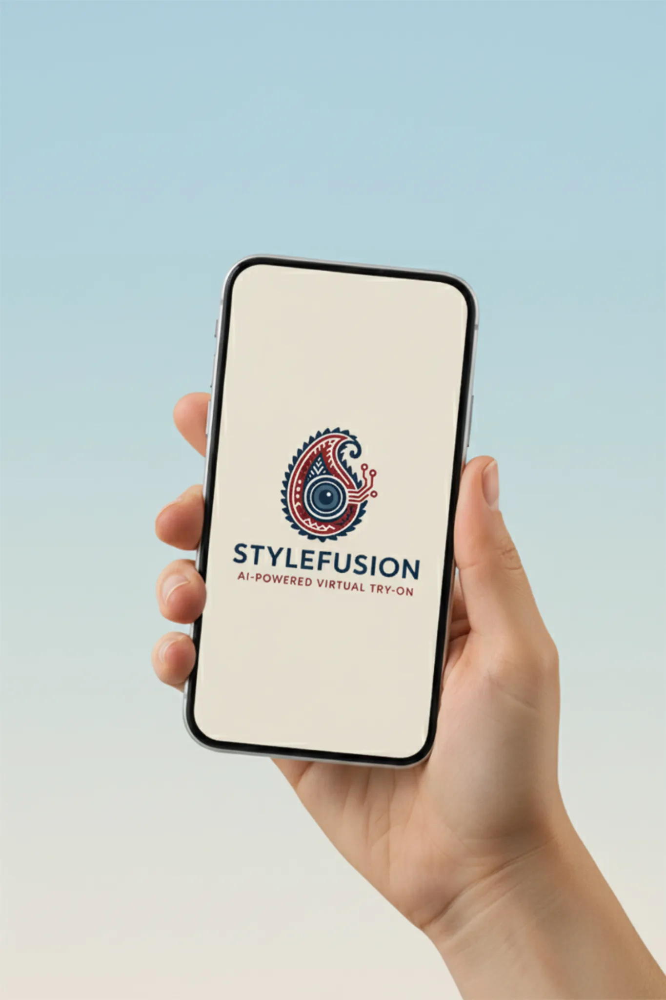

India's Textile-Tech Platform
2
Free Try-Ons
3×
Faster Sales
0%
AI in Sector Today
Sell fabric with the confidence of ready-made.
StyleFusion gives fabric shop owners and tailors an AI-powered mobile tool to show customers exactly how stitched clothing will look — before they buy. Built for Tier 2 and Tier 3 India.
Brand Promise
"See before you stitch." Customers buy with confidence. Merchants sell with certainty. Tailors close orders faster.
Try-On Experience
StyleFusion
Upload. Generate. Decide.
See stitched garments on the customer before purchase — instant, realistic, convincing.
In-store tool for merchants to visualize any fabric stitched, right on the customer's photo.
2 free try-ons to start. Razorpay subscriptions for high-volume shops — clear and fair.
How It Works
From fabric to final look in 4 steps.
StyleFusion makes virtual try-ons effortless — inside any fabric shop, on any mobile phone, in seconds.
Capture the Customer
The merchant takes or uploads the customer's photo directly in the app — quick, private, and instant.
Select the Fabric
Choose from fabric swatches in store — silk, cotton, linen, polyester, or custom blends.
AI Generates Preview
StyleFusion's AI renders a realistic stitched outfit on the customer in seconds. No imagination needed.
Customer Decides with Confidence
Hesitation drops. The customer sees the final look, and the sale is closed faster — every time.
Pair Garment Mode
Preview shirt and pant fabrics together. Match top and bottom combinations for complete outfit confidence — a feature unique to StyleFusion that no traditional fabric shop can offer.
The App Experience
A fashion-tech tool built for the shop floor.
Clean, fast, and powerful — StyleFusion transforms how textile merchants interact with customers at the point of sale.

What the app delivers
StyleFusion puts a realistic AI preview directly in the hands of every merchant, at the moment of sale. The customer sees themselves in the fabric — stitched, styled, and ready. Doubt disappears. The order is placed.
- Upload customer photo or capture in-app
- Select fabric from store inventory
- AI generates stitched preview in seconds
- Pair Garment mode for top + bottom combinations
- Save to history, mark favourites, share results
- 2 free try-ons, then simple Razorpay subscriptions
Mobile-First
Android & iOS
Multilingual
Razorpay
▲ Instant Generation
Result in seconds. No waiting, no friction — just a confident customer ready to buy.
◉ History & Favourites
Every try-on is saved. Customers revisit, compare outfits, and build loyalty with the merchant.
Platform Features
Built for the Indian textile market.
Every feature is designed around one goal: turning fabric hesitation into a confident purchase decision.
⚙ AI-Powered Try-On
Realistic fabric visualization renders how stitched clothing will look on a specific customer — no imagination needed on anyone's part.
■ In-Store Workflow
Designed for offline fabric shops and tailors. Works on any Android or iOS device. Offline-capable for core features.
◈ Credits & Subscriptions
Two free try-ons to start. Transparent credit system. Upgrade plans with Razorpay — clear, fair, and simple for shop owners of all sizes.
◎ Multilingual UI
Hindi, Gujarati, Tamil, and more. Merchants in any region can use StyleFusion naturally in their own language.
◈ Private & Secure
Customer photos are never stored publicly. Privacy is a design principle, not an afterthought.
▲ Share & Convert
Customers share their try-on previews with family before deciding — extending your shop's influence beyond the four walls.
The Problem We Solve
One question costs India's textile market thousands of rupees every day.
"The fabric is beautiful, but I'm not sure how it'll look stitched."
Walk into any fabric shop in Surat, Jaipur, Tirupur, or Bhopal. A customer picks up beautiful fabric, feels the texture, admires the colour — and then hesitates. That single question costs merchants sales daily.
This isn't about quality. The fabric is fine. The tailor is skilled. The problem is visualization — or the lack of it. StyleFusion solves exactly this.
A realistic preview, right at the point of sale.
StyleFusion puts an AI-powered try-on directly in the hands of every merchant. The customer sees themselves wearing the fabric — stitched, styled, and ready. Doubt disappears. The sale is made.
- AI-generated wardrobe preview on actual customer photo
- Mobile-first, works in the shop instantly
- History, favourites, and shareable results
- Language-ready for every Indian market
For MSMEs
A business tool built for offline textile retail.
StyleFusion isn't a generic e-commerce app. It's designed specifically for the offline textile retail reality of Tier 2 and Tier 3 India.
⬢ Fabric Shop Owners
Show customers how any fabric looks stitched — instantly. Close sales faster and reduce the returns caused by post-stitching disappointment.
✂ Tailors & Boutiques
Build customer trust by previewing designs before cutting. Fewer revisions, faster approvals, happier clients who come back.
◉ Fashion-Conscious Customers
Finally see exactly how an outfit will look before spending. No more doubts at the checkout counter, no post-purchase regret.
Next Step
Start the Conversation
Ready to put StyleFusion in your shop?
Join textile merchants across India who are modernizing their shops with AI try-on. Request early access today.